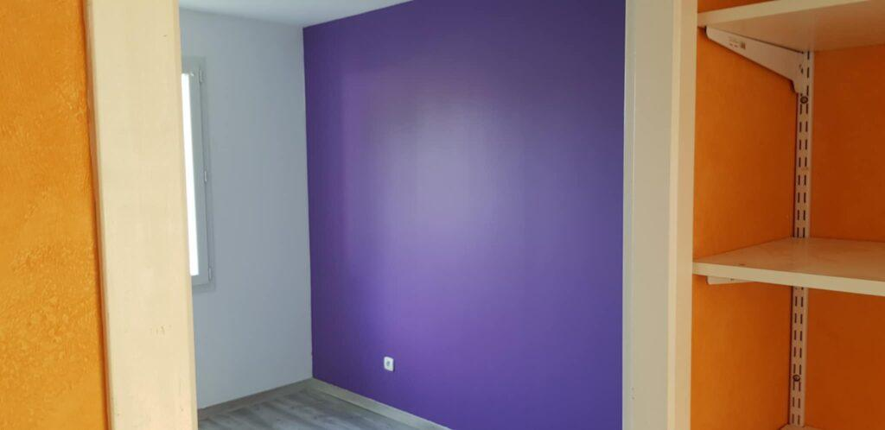

Peinture intérieure et extérieure
Murs, plafonds, boiseries et façades. Une préparation soignée des supports pour un rendu net et durable.

Ce que nous réalisons
La qualité d'une peinture dépend surtout de la préparation. Nous y consacrons le temps nécessaire.
Murs et plafonds
Rafraîchissement d'une pièce ou rénovation complète, en teinte neutre ou en couleur affirmée.
Boiseries et menuiseries
Portes, plinthes, fenêtres et escaliers, avec la finition adaptée à l'usage.
Façades
Peintures extérieures respirantes, résistantes aux intempéries.
Après un dégât des eaux
Séchage, traitement anti-moisissure, reprise des plâtres puis remise en peinture.
Conseil couleurs
Aide au choix des teintes et des finitions (mat, satin, brillant), essais directement sur le mur.
Peintures saines
Peintures intérieures classées A+, et peintures écologiques à faible teneur en COV sur demande.

Vous hésitez sur une couleur ?
Nous posons des échantillons directement sur vos murs pour juger la teinte à la lumière de la pièce. Nos repères pour choisir la bonne finition sont réunis dans un article.
Lire nos conseils peintureNotre méthode
- ProtectionMobilier déplacé ou bâché, sols protégés, caches électriques déposés.
- PréparationGrattage, rebouchage des fissures, ratissage et ponçage.
- Mise en peintureUne sous-couche puis deux couches de finition, en respectant les temps de séchage.
- Finitions et nettoyageRetouches, repose des caches, nettoyage complet.
Questions fréquentes
Une autre question ? Appelez-nous au 06 26 72 61 93.
Combien de temps pour repeindre une pièce ?
Comptez 2 à 3 jours pour une pièce de 15 à 20 m², et 5 à 7 jours ouvrés pour un appartement de 60 m², préparation comprise.
Quelle finition choisir ?
Le mat masque les défauts et convient aux plafonds et aux chambres. Le satin se nettoie mieux et convient aux pièces de vie, cuisines et couloirs. Le brillant est réservé aux boiseries.
Puis-je fournir ma propre peinture ?
Oui. Nous travaillons avec des marques professionnelles, mais vous pouvez aussi choisir votre peinture. Nous vérifions alors qu'elle convient au support.
Faut-il ajouter la TVA au prix du devis ?
Non. JG Concept Rénovation est une micro-entreprise : la TVA n'est pas applicable (article 293 B du code général des impôts). Les prix indiqués sur nos devis sont des prix nets.
Peinture dans le bassin de Vichy
Nous intervenons à Vichy, Cusset, Bellerive-sur-Allier, Saint-Yorre, Abrest, Saint-Rémy-en-Rollat, Saint-Germain-des-Fossés, Gannat, Saint-Pourçain-sur-Sioule, Varennes-sur-Allier, Lapalisse, Le Mayet-de-Montagne, Randan, Maringues, Puy-Guillaume, et dans les 167 communes à moins de 30 km de Vichy, dans l'Allier et le Puy-de-Dôme.
Un projet de rénovation ? Parlons-en.
Nous venons voir les lieux gratuitement et vous remettons un devis détaillé sous 72 heures.